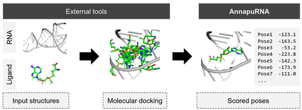
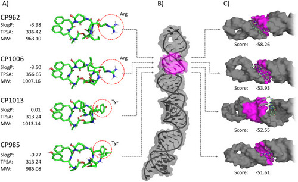
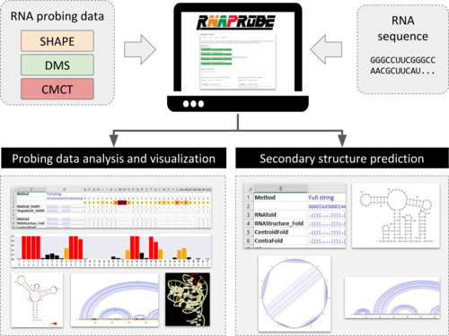
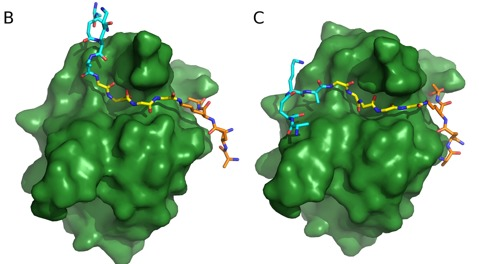
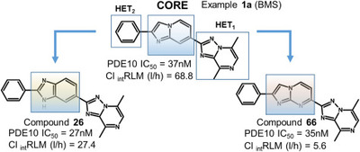
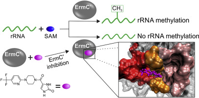
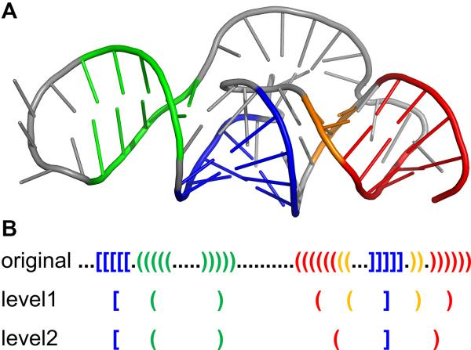
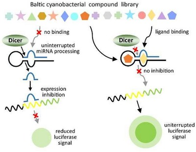
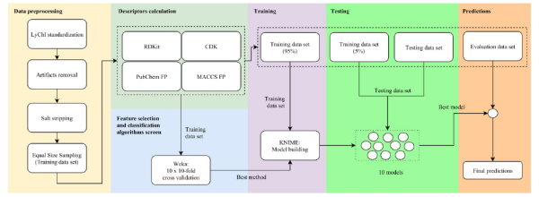
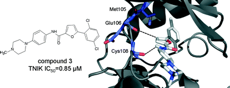

Filip Stefaniak
Publications
 0000-0001-5758-9416
0000-0001-5758-9416
Google scholar
PubMed
PBN - polon
2021 (book chapter) Computational Modeling Methods for 3D Structure Prediction of Ribozymes
Topics:
Pritha Ghosh, Chandran Nithin, Astha Joshi, Filip Stefaniak, Tomasz K. Wirecki, Janusz M. Bujnicki
Computational Modeling Methods for 3D Structure Prediction of Ribozymes; Ribozymes, Volume 2, Chapter 33; pp 861-881, 2021 | DOI: 10.1002/9783527814527.ch33
2021 AnnapuRNA: A scoring function for predicting RNA-small molecule binding poses
Topics:

Filip Stefaniak, Janusz M Bujnicki
AnnapuRNA: A scoring function for predicting RNA-small molecule binding poses, February 1, 2021 | DOI: journal.pcbi.1008309
IF: 4.700
AnnapuRNA repository: github
2020 Luciferase reporter assay for small-molecule inhibitors of MIR92b-3p function: Screening cyanopeptolins produced by Nostoc from the Baltic Sea
Topics:

Paweł Brzuzan, Hanna Mazur-Marzec, Maciej Florczyk, Filip Stefaniak, Anna Fidor, Robert Konkel, Maciej Woźny
Luciferase reporter assay for small-molecule inhibitors of MIR92b-3p function: Screening cyanopeptolins produced by Nostoc from the Baltic Sea
Toxicology in Vitro, 2020, Volume 68, 104951 | DOI: 10.1016/j.tiv.2020.104951
IF: 2.959; 5-Year IF:
2020 RNAProbe: a web server for normalization and analysis of RNA structure probing data
Topics:

Tomasz K Wirecki, Katarzyna Merdas, Agata Bernat, Michał J Boniecki, Janusz M Bujnicki, and Filip Stefaniak
RNAProbe: a web server for normalization and analysis of RNA structure probing data
Nucleic Acids Research, 2020, Volume 48, Issue W1, Pages W292–W299 | DOI: 10.1093/nar/gkaa396
IF: 16.971; 5-Year IF: 15.542
The web server described in the paper: https://rnaprobe.genesilico.pl/
2020 Benzoxazepine-Derived Selective, Orally Bioavailable Inhibitor of Human Acidic Mammalian Chitinase
Topics:
Gleb Andryianau, Michal Kowalski, Michal C. Piotrowicz, Adam A. Rajkiewicz, Barbara Dymek, Piotr L. Sklepkiewicz, Elzbieta Pluta, Filip Stefaniak, Wojciech Czestkowski, Sylwia Olejniczak, Marzena Mazur, Piotr Niedziejko, Robert Koralewski, Krzysztof Matyszewski, Mariusz Gruza, Agnieszka Zagozdzon, Magdalena Salamon, Aleksandra Rymaszewska, Mikolaj Welzer, Karolina Dzwonek, Jakub Golab, Jacek Olczak, Agnieszka Bartoszewicz, and Adam Golebiowski
Benzoxazepine-Derived Selective, Orally Bioavailable Inhibitor of Human Acidic Mammalian ChitinaseACS Med. Chem. Lett. 2020, 11, 6, Pages 1228–1235 | DOI: 10.1021/acsmedchemlett.0c00092
IF: 3.975 (2019)
2019 Development of Dual Chitinase Inhibitors as Potential New Treatment for Respiratory System Diseases
Topics:
Marzena Mazur, Barbara Dymek, Robert Koralewski, Piotr Sklepkiewicz, Sylwia Olejniczak, Marcin Mazurkiewicz, Michał Piotrowicz, Magdalena Salamon, Karol Jędrzejczak, Agnieszka Zagozdzon, Wojciech Czestkowski, Krzysztof Matyszewski, Bartłomiej Borek, Agnieszka Bartoszewicz, Elżbieta Pluta, Aleksandra Rymaszewska, Witold Mozga, Filip Stefaniak, Paweł Dobrzański, Karolina Dzwonek, Jakub Golab, Adam Golebiowski, and Jacek Olczak
Development of Dual Chitinase Inhibitors as Potential New Treatment for Respiratory System DiseasesJournal of Medicinal Chemistry, 62 (15), 2019, Pages 7126-7145 | DOI: 10.1021/acs.jmedchem.9b00681
IF: 6.205 (2019)
2019 Structural bases of peptidoglycan recognition by lysostaphin SH3b domain
Topics:

Paweł Mitkowski, Elżbieta Jagielska, Elżbieta Nowak, Janusz M. Bujnicki, Filip Stefaniak, Dorota Niedziałek, Matthias Bochtler & Izabela Sabała
Structural bases of peptidoglycan recognition by lysostaphin SH3b domain
Scientific Reports, volume 9, Article number: 5965, 2019, Pages: tba | DOI: 10.1038/s41598-019-42435-z
IF: 4.122; 5-Year IF: 4.609
2018 Human RNA cap1 methyltransferase CMTr1 cooperates with RNA helicase DHX15 to modify RNAs with highly structured 5′ termini
Topics:
Diana Toczydlowska-Socha, Magdalena M. Zielinska, Malgorzata Kurkowska, Astha, Catarina F. Almeida, Filip Stefaniak, Elzbieta Purta, Janusz M. Bujnicki
Phil. Trans. R. Soc. B 2018 373, 20180161, 2018| DOI: 10.1098/rstb.2018.0161
IF: 5.666 (2017); 5-Year IF: 7.192
Visible also as: D Toczydlowska-Socha, M Kurkowska, M Zielinska, A Joshi, C Almeida, E Purta, F Stefaniak, J Bujnicki, FEBS OPEN BIO 9, 121-122, 2019.
2019 (conference paper) Riboswitch-ligand structure determination using an integrative structural biology approach
Topics:
A Ponce-Salvatierra, R Pluta, E Skowronek, M Orlowska, B Baginski, M Kurkowska, E Purta, P Ghosh, T Wirecki, F Stefaniak, JM Bujnicki
FEBS OPEN BIO, 9, 243-243, 2019.
2018 Synthesis and characterization of novel classes of PDE10A inhibitors - 1H-1,3-benzodiazoles and imidazo[1,2-a]pyrimidines
Topics:

Rafał Moszczyński-Pętkowski, Jakub Majer, Małgorzata Borkowska, Łukasz Bojarski, Sylwia Janowska, Mikołaj Matłoka, Filip Stefaniak, Damian Smuga, Katarzyna Bazydło, Krzysztof Dubiel, Maciej Wieczorek
European Journal of Medicinal Chemistry 155, 15 July, 2018, Pages 96-116 | DOI: 10.1016/j.ejmech.2018.05.043
IF: 4.519; 5-Year IF: 4.187
2018 Discovery of selective, orally bioavailable inhibitor of mouse chitotriosidase.
Topics:

Mazur M, Bartoszewicz A, Dymek B, Salamon M, Andryianau G, Kowalski M, Olejniczak S, Matyszewski K, Pluta E, Borek B, Stefaniak F, Zagozdzon A, Mazurkiewicz M, Koralewski R, Czestkowski W, Piotrowicz M, Niedziejko P, Gruza MM, Dzwonek K, Golebiowski A, Golab J, Olczak J
Bioorg Med Chem Lett. Volume 28, Issue 3, 1 February 2018, Pages 310-314 | DOI: 10.1016/j.bmcl.2017.12.047
IF: 2.454; 5-Year IF: 2.286
2018 Novel inhibitors of the rRNA ErmC′ methyltransferase to block resistance to Macrolides, Lincosamides, Streptogramine B antibiotics
Topics:

Foik IP, Tuszynska I, Feder M, Purta E, Stefaniak F, Bujnicki JMEur J Med Chem Volume 146, 25 February 2018, Pages 60-67 | DOI: 10.1016/j.ejmech.2017.11.032
IF: 4.519; 5-Year IF: 4.187
2018 RNArchitecture: a database and a classification system of RNA families, with a focus on structural information
Topics:

Boccaletto P, Magnus M, Almeida C, Zyla A, Astha, Pluta R, Baginski B, Jankowska E, Dunin-Horkawicz S, Wirecki T, Boniecki M, Stefaniak F, Bujnicki JM
Nucleic Acids Res. 2018 Jan 4;46(D1):D202-D205. | DOI: 10.1093/nar/gkx966
IF: 10.162
2018 Exploring Baltic Sea cyanobacteria for small-molecule inhibitors of microRNA function: a project description
Topics:

Paweł Brzuzan, Hanna Mazur Marzec, Filip Stefaniak, Maciej Woźny, Maciej Florczyk
ENVIRONMENTAL BIOTECHNOLOGY 14 (1) 2018; Pages 1-4| DOI: 10.14799/ebms301 (doesn't work for some reasons...)
2016 Molecularly Imprinted Polymer (MIP) Film with Improved Surface Area Developed by Using Metal-Organic Framework (MOF) for Sensitive Lipocalin (NGAL) Determination
Topics:
Zofia Iskierko, Piyush Sindhu Sharma, Daniel Prochowicz, Krzysztof Fronc, Francis D'Souza, Diana Toczydlowska, Filip Stefaniak, Krzysztof Noworyta,
ACS Appl. Mater. Interfaces, 2016, 8 (31), pp 19860–19865 | DOI: 10.1021/acsami.6b05515
IF: 7.504
2015 Prediction of compounds activity in nuclear receptor signaling and stress pathway assays using machine learning algorithms and low dimensional molecular descriptors
Topics:

Filip StefaniakFront. Environ. Sci., 01 December 2015 | DOI: 10.3389/fenvs.2015.00077
IF: 4.581
2015 Modeling of ribonucleic acid–ligand interactions
Topics:
Filip Stefaniak, Ewa Chudyk (Joint First Authorship), Michael Bodkin, Wayne Dawson, Janusz M. BujnickiWIREs Comput Mol Sci 2015, 5:425–439. | DOI: 10.1002/wcms.1226
IF: 14.016
2015 Discovery of TRAF-2 and NCK-interacting kinase (TNIK) inhibitors by ligand-based virtual screening methods
Topics:

Anna Bujak, Filip Stefaniak (Joint First Authorship), Daria Zdzalik, Paulina Grygielewicz, Barbara Dymek, Marcin Zagozda, Pawel Gunerka, Monika Lamparska-Przybysz, Krzysztof Dubiel, Maciej Wieczoreka and Karolina DzwonekMedChemComm 6 (8), 2015, 1564-1572 | DOI: 10.1039/C5MD00090D
IF: 2.608